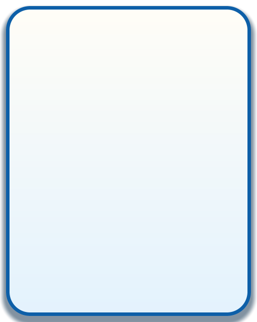

GENERATED SAMPLE / 2026.09.27
게임 UI와 FX를
실제로 뽑아봤습니다.
같은 팔레트로 만든 버튼·패널·HUD 재료 8장과 이펙트 4종을 직접 비교하세요. 아래 이미지는 스펙에서 생성한 PNG 원본입니다.
08UI PNG
04FX 종류
32FX 프레임
01 / UI ART SYSTEM
상태가 이어지는 UI 킷
버튼 상태와 패널·바를 같은 색 토큰으로 생성했습니다. 이미지를 누르면 원본 PNG가 열립니다.
PANEL / 01패널 프레임384×384 · 9-slice
POPUP / 01팝업 배경512×640 · 9-slice

HUD / 01HUD 바track + fill · 320×44
CONTEXT PREVIEW
게임 배경에 올려 보기
UI 배치와 글자는 검수용 목업입니다. 구성 요소 PNG는 위에서 원본으로 확인하세요.
PLAYER 01
02 / FX ART SYSTEM
움직임으로 보는 이펙트
종류를 골라 재생하거나 프레임을 직접 넘겨보세요. 128px 원본 프레임을 표시합니다.
타격 임팩트8프레임 · 30fps
01 / 08
가산 합성용 FX 시안입니다. 비루프 효과는 한 번 재생하고 멈춥니다. 브라우저 표시가 엔진의 additive 블렌딩과 같지는 않습니다.
03 / YOUR REVIEW
어떤 쪽을 고칠까요?
항목별로 평가하고 메모를 남기세요. 선택은 현재 브라우저에만 보관됩니다.
생성 도구의 샘플입니다. 실제 화면·작은 기기·접근성·게임 내 타이밍의 승인은 별도 검수가 필요합니다.
이전 캐릭터 검수 화면 보기 ↗